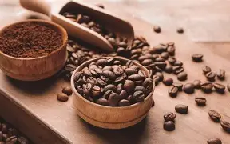

Tentang Kopi
Kopi (bahasa Belanda: koffie, bahasa Inggris: coffee) atau kahwa adalah tanaman industri pertanian yang dijadikan minuman hasil seduhan biji kopi yang telah disangrai dan dihaluskan menjadi bubuk.Kopi merupakan salah satu komoditas di dunia yang dibudidayakan lebih dari 50 negara. Dua spesies pohon kopi yang dikenal secara umum yaitu Kopi Robusta (Coffea canephora) dan Kopi Arabika (Coffea arabica).
